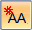

Datum Frame command bar
Sets options for datum frames.
- Dimension Style Mapping
-
Specifies that the setting on the Dimension Style tab of the Options dialog box determines the dimension style. When you set this option, Dimension Style is unavailable.
- Dimension Style
-
Lists and applies the available dimension styles. This control is unavailable when Dimension Style Mapping is enabled.
- Text scale
-
Applies a scale value to the text height of annotations. Increasing or decreasing the text scale changes the overall text size. The default is 1.0.
- Properties
-
Accesses the Datum Frame Properties dialog box.
- Leader
-
Displays the leader. When this option is set, you can place the leader in free space or attach it to any element except text. When this option is cleared, the software creates an extension line.
- Break Line
-
Displays a horizontal break line on the leader.
Break line length is set on the Datum Frame Properties dialog box.
- Text
-
Specifies the letters for the datum frame.
You can create a superscript or subscript by typing the /ST format code in the Text box and pressing the Tab key.
Example:To generate a datum frame with this subscript:

Type this in the Text box: A%{/ST^1}
To learn about this and other formatting options, see Format codes to modify property text output.
Note:The Text box is available only when the Auto-Name option is not being used.

Auto-Name-
Automatically names the datum frame.
When this option is selected, the datum frame name is assigned automatically using the naming sequence defined in the Specify Annotation Letters dialog box, which can be opened from the Annotation tab (Solid Edge Options dialog box).
Note:The Auto-Name option is available when the Follow defined object sequence option is selected on the Annotation tab.
To learn how, see Define annotation labels.
- Datum Frame Shape
-
Specifies whether the datum frame shape is a rectangle or circle.
 Lock Dimension Plane
Lock Dimension Plane-
Sets the active dimension plane for the creation of PMI dimensions and annotations. The active dimension plane controls how values are calculated and how the text is displayed.
You are prompted to specify the dimension plane by clicking a planar face or reference plane. The plane remains locked until you unlock it by pressing F3.
 Referenced Geometry
Referenced Geometry-
Specifies that you want to select multiple edges, faces, or surfaces to be referenced by a single PMI annotation. You also can select this option when editing the annotation, to add or remove reference elements. Use the Select Reference Geometry command bar to accept the selection set, and then return to the hosting command workflow to finish adding or editing the annotation.

For more information, see Select multiple reference elements.
How do I
Place a feature control frame or datum frameDefine feature control frame content
Example: Add symbols to a feature control frame
Save a feature control frame
Activate a saved feature control frame
Place a datum target
Learn more
Geometric tolerancingLook up more details
Manipulating feature control framesFeature Control Frame command
Feature Control Frame command bar
Feature Control Frame Properties dialog box
General tab (Feature Control Frame Properties dialog box)
Datum Frame command
Datum Frame Properties dialog box
General tab (Datum Frame Properties dialog box)
Datum Target command
Datum Target command bar
Datum Target Properties dialog box
General tab (Datum Target Properties dialog box)